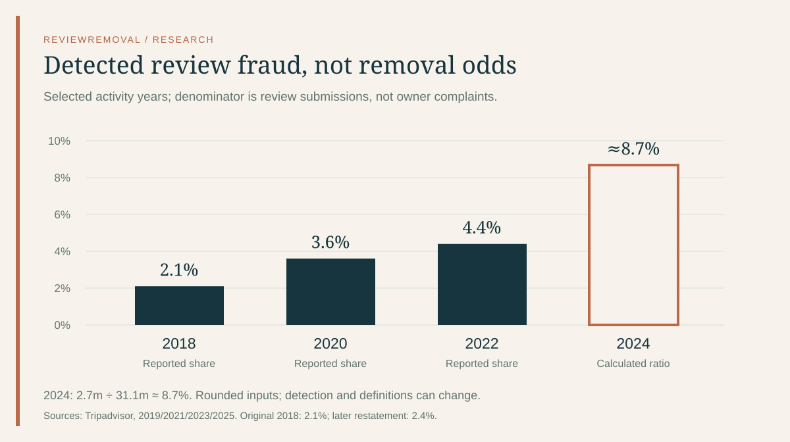
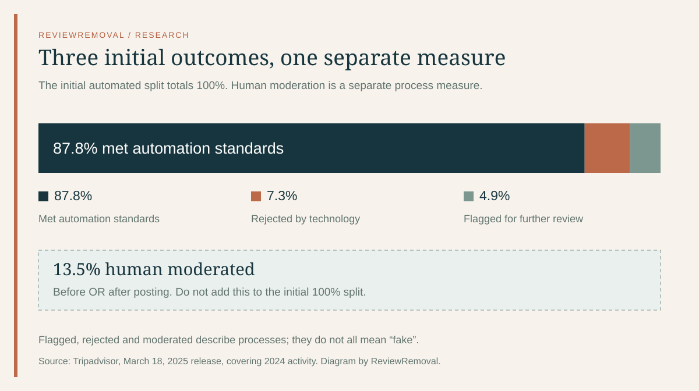

On this page
“Fake reviews removed” and “business reports accepted” measure different things. Tripadvisor’s disclosures offer unusually useful numbers, but combining them without preserving their denominators produces an answer the data cannot support.
What this audit adds
We align four public reporting periods by the year the activity occurred, keep source percentages separate from calculated ratios, and reconstruct two moderation examples. This is an analysis of published company data, not an independent fraud survey or a success-rate study of ReviewRemoval clients.
The important questions are specific: How many reviews were submitted? Which were identified as fraudulent? Were they stopped before publication? And what happened to the smaller group someone reported? Each answer needs a different denominator.
Tripadvisor fake review data, 2018–2024
Selected published periods: activity year is different from report year
| Activity / report year | Review submissions | Detected fraud share | Before publication¹ |
|---|---|---|---|
| 2018 / 2019 | >66m | 2.1% | 73% |
| 2020 / 2021 | >26m | 3.6% | 67.1% |
| 2022 / 2023 | >30.2m | 4.4% | 72% |
| 2024 / 2025 | ≈31.1m | ≈8.7%² | Not stated³ |
Scroll the table sideways to see every column.
¹ Share of identified fraudulent submissions, not all reviews. ² Our ratio, 2.7m ÷ 31.1m × 100, uses rounded counts. ³ Not stated in the selected 2025 press release; this is not a zero. Sources: 2019 report, 2021 release, 2023 release, 2025 release.


A higher detected share does not establish that travellers encountered more fraud. Detection capability, submission patterns, policy scope and reporting definitions can affect it. These publications do not hold those factors constant. Connecting the bars would imply observations for intervening years, so our chart uses separate bars.
The 2024 calculation is approximately 8.6817%, rounded to one decimal. It is tempting to present more digits as greater accuracy. That would be misleading: the two source counts were already rounded. We publish the inputs and formula so a researcher can reproduce the ratio without mistaking it for an exact population estimate.
Why do sources give 2.1% or 2.4% for 2018?
The original 2019 report states 2.1% for 2018. The 2023 full report’s retrospective gives 2.4% for that same activity year. The difference is 0.30 percentage points. The cited passages do not establish why the figures differ. We do not label this a correction, a policy change or a measurement error without further evidence.
For 2022, there is a simpler precision difference: the press release gives 4.4%, while the full report gives 4.37%. Rounding 4.37% to one decimal gives 4.4%. That explanation fits the 2022 pair; it does not resolve the 2018 disagreement.
Our chart is an audit of the selected contemporary publications, not a reconciled historical series. Anyone studying a trend should preserve the publication version beside each value. Mixing the original 2018 baseline with a later retrospective without disclosing the choice can change a calculated comparison.
Download the source differences (CSV)
A prevented submission is not a visible review taken down
The 2019 report says 73% of detected fraudulent 2018 submissions were prevented before posting. It separately records 374,220 fraudulent reviews removed after publication. The report also gives a broader 4.7% rejection-or-removal share, covering guideline violations as well as fraud. Those are distinct measures. 2019 report, pages 6 and 17
Here is our normalization of the later pre-publication percentages to 1,000 hypothetical detected fraudulent submissions. It changes the scale, not the reported relationship.
Illustration per 1,000 detected fraudulent submissions; these are not actual counts
| Period | Before posting | Remaining share |
|---|---|---|
| 2018 | 730 | 270 |
| 2020 | 671 | 329 |
| 2022 | 720 | 280 |
Scroll the table sideways to see every column.
The remaining column is simply 1,000 minus the before-posting amount. It does not measure how long content was visible, how often it was read, or how many cases involved an owner’s report. The 2023 release says 72% of 2022 identified fake reviews were stopped before posting; the 2021 release gives 67.1% for 2020. 2023 release · 2021 release
Does Tripadvisor remove 43% of reported reviews?
For 2020, Tripadvisor reported that travellers or businesses flagged 1.0% of reviews and that 43% of community-reported reviews were removed after assessment. Its separate platform-wide rejected-or-removed share was 8.6%. The three percentages describe different groups. 2021 disclosure
Normalize those rounded percentages to an illustrative 10,000 submissions: roughly 100 would be community-reported, and roughly 43 of those reports would result in removal. Multiplying 1.0% × 43% gives 0.43% of all submissions in this illustration. It does not mean only 0.43% of problematic content was handled; other moderation routes were also operating.
The denominator for 43% is the reported set. People do not report a random sample: they select content they think needs attention. A platform may also act on a review before someone reports it. This selection makes a community-report proportion unsuitable as the odds for a randomly chosen review, a Canadian hotel, or a new client.
How to cite the 43% figure accurately
State the activity year, the reporting group and the outcome. The figure concerns community reports assessed in 2020. It is not a current removal promise, and the selected 2025 release does not supply an updated equivalent.
The 2024 screening numbers are not all additive
The 2025 release describes three initial automated outcomes: 87.8% meeting standards, 7.3% rejected by technology and 4.9% sent for further review. It separately says the human team moderated 4.2 million reviews, or 13.5%, before or after posting. 2025 disclosure


The initial percentages sum to 100%. Adding 13.5% creates a fictitious 113.5% pie. Subtracting 4.9% from 13.5% to claim that precisely 8.6% were investigated only after posting is also unsupported: these are process measures with rounding and potentially different inclusion rules, not a published disjoint partition.
Why AI and employee-incentive counts need care
Tripadvisor also reported 214,000 AI-generated reviews flagged and removed, 360,000 removed reviews linked to employee incentive programmes, and a 54% review-boosting share of detected fraud in 2024. 2025 disclosure
Those descriptions concern different dimensions: how text was produced, the incentive attached to posting, and the purpose of manipulation. A single post could fit more than one description. The selected release does not supply an intersection table. We therefore do not add them to the 2.7 million fraud total or turn them into mutually exclusive chart slices.
The same caution applies when comparing platforms. Google’s broad policy-violating review totals and Trustpilot’s detected fake-review counts do not share a definition or denominator with this series. Use our Google audit and Trustpilot analysis for the source definitions rather than combining them into a league table.
What Canadian hotels and restaurants can use
These global figures do not estimate fraud in Toronto, Niagara, Montréal, Banff, Vancouver or any other destination. A Canadian business can use the definitions to organize its own records, but it cannot multiply its review count by 8.7% and conclude that the result is fake.
A practical case record should contain the property URL, exact review URL, date observed, the suspected policy issue, and any relevant first-hand evidence. Distinguish a post on Tripadvisor from a similarly worded Google or Booking.com review. For several properties, keep separate rows rather than treating the brand as one listing.
ISED’s Canadian tourism SME report provides national business context, not Tripadvisor removal outcomes. Our Canadian data article and Canada service page keep that distinction explicit. The Competition Bureau’s review guidance also cautions against suppressing genuine, relevant and lawful reviews.
Questions the figures cannot answer alone
How likely is my Tripadvisor review to be removed?
No client-level probability follows from these aggregate reports. Eligibility depends on the specific review, platform rule and evidence. An assessment should address those facts rather than turn a historical global statistic into a sales promise.
How long will removal take?
A historical assessment-speed statistic is not a current completion deadline. Assessment and removal are also different events. Keep your actual case notices and use the platform’s current guidance for the next step.
Is a one-star review automatically suspicious?
No. A low score can describe a genuine experience. If you identify a specific rule concern, Tripadvisor’s business guidance describes submitting it through the management tools. Our evidence guide explains how to keep a report focused.
Methods and reuse
- We selected the 2019 report and 2021, 2023 and 2025 company releases. We indexed each row by its activity year, not its publication year. We cross-checked the 2023 full report and documented its differing historical value separately.
- We retained published percentages for 2018–2022. For 2024 only, we divided the rounded 2.7 million fraud count by the rounded 31.1 million review count. The CSV marks that different basis.
- We normalized before-posting percentages to 1,000 and the 2020 reporting example to 10,000 for illustration. These are scale examples, not observed counts.
- We kept unavailable fields blank, did not fill intervening years and did not infer non-overlapping categories.
- We did not obtain review-level data, audit detection accuracy, estimate undetected fraud or measure Canadian removal outcomes.
Suggested citation
ReviewRemoval (2026). Tripadvisor fake review statistics: what removal numbers mean. September 27, 2026. Analysis of Tripadvisor disclosures covering 2018, 2020, 2022 and 2024. Reuse our charts or calculations with a link to this page and cite the underlying company publications.
Primary sources
- Tripadvisor Review Transparency Report 2019 — 2018 activity; rejection, fraud and pre-publication figures.
- Tripadvisor’s October 27, 2021 disclosure — 2020 submissions and community-report outcomes.
- Tripadvisor’s April 11, 2023 disclosure — 2022 submissions and fraud figures.
- Tripadvisor’s March 18, 2025 disclosure — 2024 screening, fraud and related categories. Full report landing page.
- Tripadvisor for Business: reporting concerns.
- ISED, SME Profile 2023: Tourism industries in Canada.
- Competition Bureau, Deceptive Marketing Practices Digest, Volume 3.
Sources checked September 27, 2026. Company data are self-reported. This article does not present 2024 figures as measurements of 2026 activity.
Need help with a specific review?
Send the platform and the review link. We’ll assess the details and explain the price before paid work begins.
Discuss a Tripadvisor review